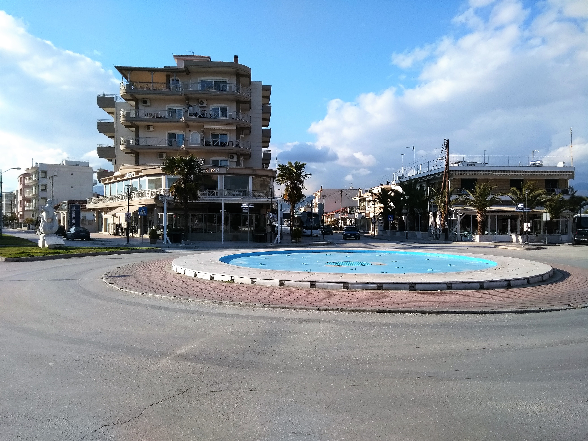

Αναστάσιος Παυλίδης
ΑΜ:3860
Οι γλώσσες προγραμματισμού που γνωρίζω ειναι οι εξής:C++,PHP,Python,java,sql.
Ο τόπος καταγωγής μου ειναι η Χρυσούπολη.
<<<<<<< HEAD
Στον ελεύθερο μου χρόνο ασχολούμαι με το ποδόσφαιρο και τον μηχανοκίνητο αθλητισμό.

=======
Στον ελεύθερο μου χρόνο ασχολούμαι με το ποδόσφαιρο και τον μηχανοκίνητο αθλητισμό.
>>>>>>> e116b79bfe86619d7163ece3b1bbaf0f60f22684